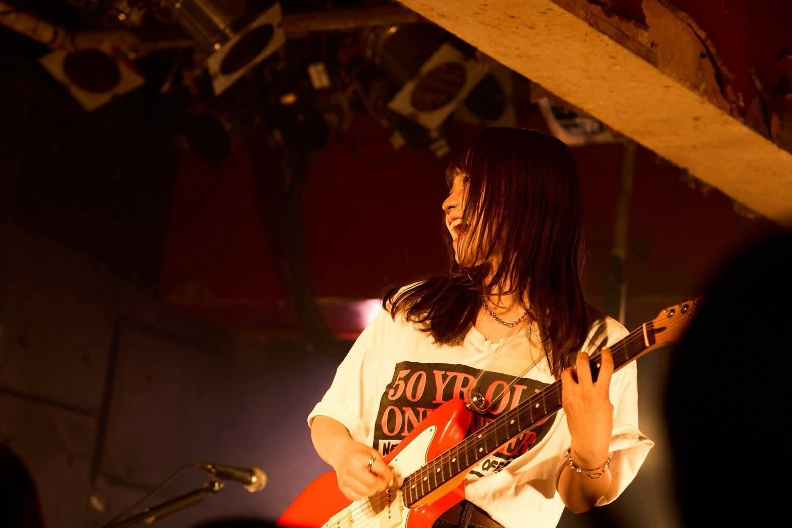
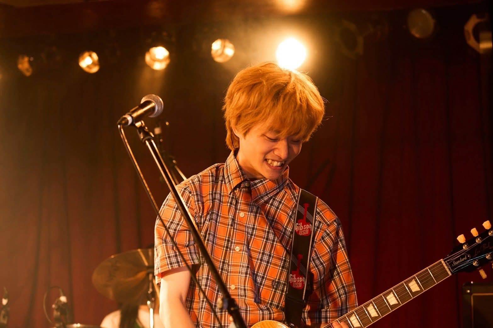
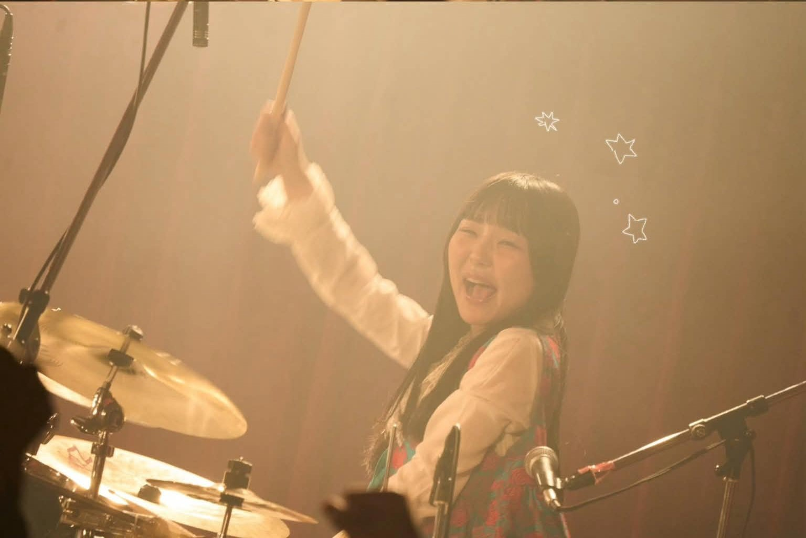

 写真引用元： Lala公式X ayaho Vo.Gt 中学2年生(14歳)の頃から弾き語りを始め、シンガーソングライターとして活動。2020年にLalaを結成。Vo.Gtを担当。Lalaでは作詞・作曲を手がけ、特に自身の経験や日常、恋愛から生まれるリアルな感情を切り取った歌詞が強み。実体験だけでなく、友人から聞いた話や想像を織り交ぜながら、誰かの心に引っかかるような言葉を紡ぐ。ペットのハムスターを愛している。 X Instagram
 写真引用元： Lala公式X TAKETO Gt.Ba Dr.YUMEKAの紹介をきっかけにLalaに加入。Gt.Baを担当し、ライブではギター、レコーディングではギターとベースの両方を演奏している。作曲を中心に、メンバーと意見を交わしながらLalaの楽曲を形にしているほか、作詞を担当することもある。冷静な視点からバンド全体を見渡し、Lalaの音楽を支えている。自他共に認める大のヲタク。ザブカル、アニメ好き。 X Instagram
 写真引用元： Lala公式X YUMEKA Dr 小学生の頃から音楽教室でドラムを始め、幼い頃からバンドへの憧れを抱きながら音楽を続けてきた。現在はLalaでDrを担当し、楽曲制作ではドラムアレンジだけでなく、数曲で作詞も担当している。メンバーと意見を交わしながら楽曲を作り上げ、自身のアイデアを取り入れたドラムアレンジでLalaのサウンドを支えている。また、グッズのデザインも主に担当しており、音楽だけでなくデザイン面でもLalaの世界観を形作っている。ディズニーが好き、ディズニーが生きがい。 X Instagram